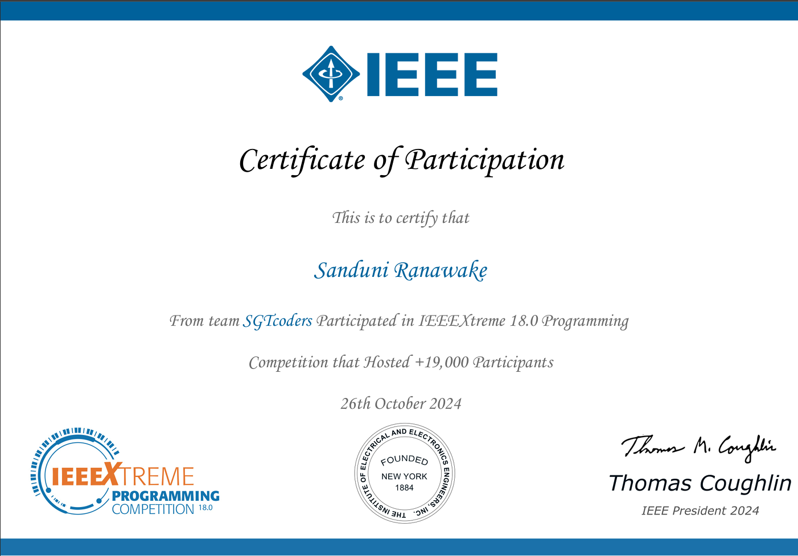
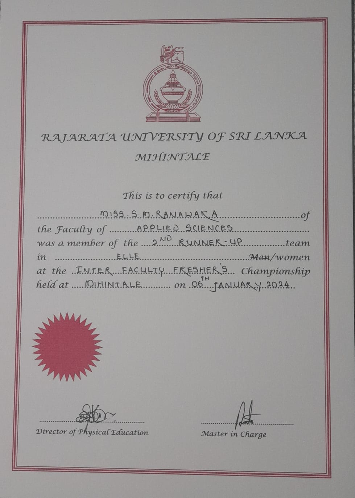
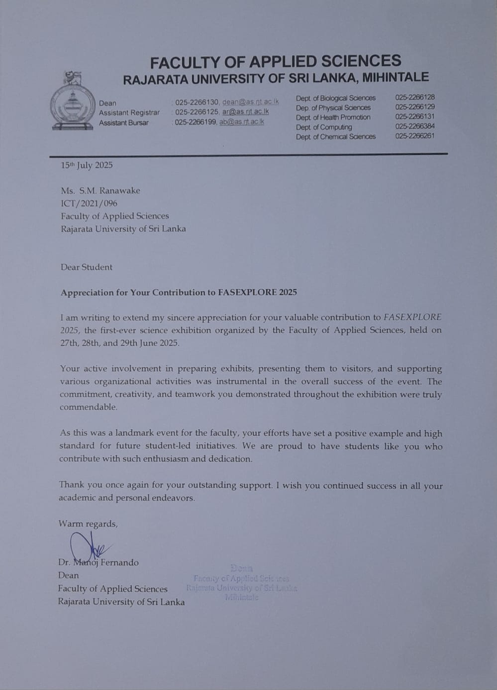
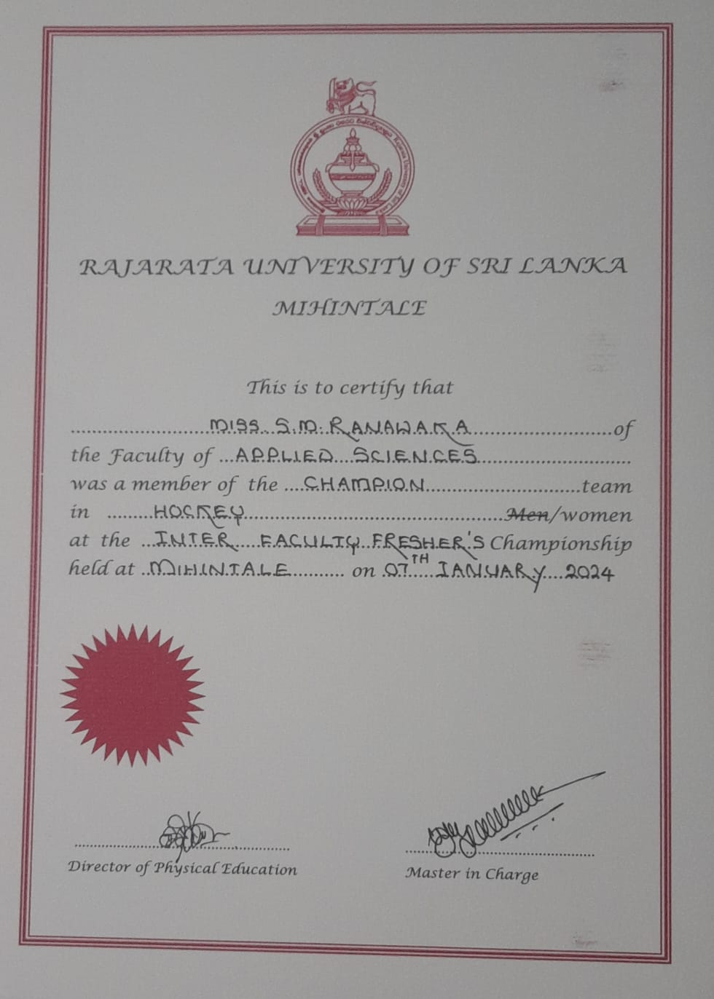

Cloud Services
Certificate demonstrating knowledge of cloud service types, deployment models, and cloud fundamentals.
A BSc IT undergraduate passionate about solving real-world problems through data analysis, data science, automation, and data-driven decision-making. Enthusiastic about transforming raw data into actionable insights, building efficient analytical solutions, and leveraging technology to optimize business processes.
I'm a BSc Information Technology undergraduate with a strong interest in Data Science, Data Analytics, and Automation. I am passionate about transforming data into actionable insights that support informed decision-making and drive business value.
I have hands-on experience in Python, MySQL, Excel, Power BI, and React, enabling me to develop data-driven applications, build interactive dashboards, automate workflows, and analyze complex datasets. Through academic and personal projects, I have gained practical experience in machine learning, data visualization, business intelligence reporting, and process automation.
I enjoy solving real-world problems using data and technology, and I am committed to continuously expanding my analytical and technical skills while contributing to innovative, data-driven solutions.
Professional
Native
Browse all available project folders and file details in one place.
Developed a web-based security assessment tool that evaluates website safety and browser hygiene by analyzing HTTPS implementation, cookies, permissions, mixed content, and potential security risks. The application generates a comprehensive security score and downloadable PDF report to help users improve safe browsing practices and digital awareness.
Read ModeBuilt a cybersecurity-focused web application that evaluates password strength based on complexity, length, and character diversity while checking exposure against known data breaches using the Have I Been Pwned API. The system helps users strengthen authentication practices and reduce account compromise risks.
Read ModeDesigned and developed a secure offline password management solution that stores user credentials using AES-256 encryption and SHA-256 hashing. The application supports credential creation, editing, import/export functionality, and encrypted local storage without relying on external servers.
Read ModeCreated an interactive Power BI dashboard for monitoring cybersecurity metrics, security incidents, threat trends, and risk indicators. Implemented data modeling and KPI tracking to provide actionable insights that support security monitoring and informed decision-making.
Read ModeDeveloped a business intelligence dashboard that analyzes customer sentiment data to identify trends, satisfaction levels, and public perception. The dashboard enables organizations to monitor sentiment patterns and make data-driven improvements to products and services.
Read ModeBuilt a comprehensive analytics platform integrating urban datasets such as air quality, traffic congestion, energy consumption, and citizen complaints. Implemented advanced data modeling, predictive analytics, and KPI reporting to provide city planners with actionable insights for smarter decision-making.
Read ModeDesigned a Power BI solution to analyze public transportation operations, including route performance, passenger demand, service reliability, and operational efficiency. The dashboard supports transportation authorities in optimizing resource allocation and improving service quality.
Read ModeDeveloped an interactive dashboard to analyze airline performance metrics, including delays, passenger satisfaction, and operational efficiency. The solution provides actionable insights to improve customer experience, optimize airline operations, and support strategic decision-making.
Read ModeCreated an end-to-end music analytics solution that extracts audio features from music files using Python and machine learning techniques. Built a Power BI dashboard to visualize genre distribution, BPM patterns, mood predictions, and audio characteristics for data-driven music analysis.
Read ModeDeveloped an interactive inventory analytics dashboard that tracks stock levels, product performance, supplier efficiency, and reorder requirements. The solution enables businesses to optimize inventory planning, reduce stock shortages, and improve operational efficiency.
Read ModeBuilt a data analytics dashboard to monitor cryptocurrency market trends, trading volumes, price movements, and portfolio performance. The platform provides real-time insights that help users understand market behavior and support investment analysis.
Read ModeDeveloped a business intelligence dashboard to analyze customer savings behavior, loan portfolio risk, digital engagement, and cross-sell opportunities. Using a cleaned dataset of 500 customer records, the dashboard delivers KPI-driven insights that support strategic business decisions and customer growth initiatives.
Read ModeDeveloped an automated invoice processing system that streamlines the entire invoice lifecycle from ingestion to approval. The solution uses OCR, PDF parsing, validation rules, duplicate detection, workflow automation, and dashboard monitoring to improve processing efficiency, accuracy, and auditability.
Read ModeView all certification folders and their contents from a single folder overview page.
Browse certificate images from the portfolio collection. Click each card to view the full image in a new tab.
Certificate demonstrating knowledge of cloud service types, deployment models, and cloud fundamentals.

Certification covering cloud service categories such as IaaS, PaaS, and SaaS.

Certificate for foundational skills in data discovery, analysis, and interpretation.

Recognition for participation in the global IEEE Xtreme programming competition.

Achievement award for top project presentation at the Innorbit Project Carnival.

Certificate for completing an introductory cybersecurity course.

Certificate for introductory training in data science principles and workflows.

Certification in using parameters and workflows within Power Automate.

Certificate validating the ability to automate desktop and cloud workflows.

Certificate in Power BI report creation, data modeling, and visualization techniques.

Certificate for foundational UX design practices and user-centered design.
Highlights of community leadership and achievement activities outside the core academic portfolio.
Recognition and awards from various competitions, events, and organizations. Click each image to view full details.

Award recognizing participation and achievement in adventure and outdoor activities.

Certificate acknowledging active and meaningful participation in community events and initiatives.

Recognition for excellence in leadership, innovation, or outstanding contribution to a specific domain.

Award from the Faculty of Applied Sciences exploration or research initiative.

Recognition for participation or excellence in hockey sports and athletic performance.

Award for contributions to media management, content creation, or social media initiatives.
Recognition for participation and progression in karate martial arts training and competitions.
Award recognizing participation or excellence in netball team sports.
Recent recognition for netball performance and contribution in 2024 season.

Achievement award from Variga Mangallaya organization or event recognizing community contribution.
I'm currently looking for new opportunities and collaborations. Feel free to reach out!